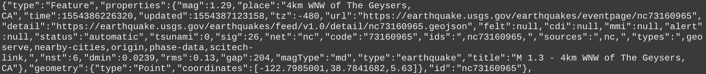

Earthquake Tutorial
To recieve data about Earthquakes, we chose to use the same API that was used in the tutorials of the project starters. As by going through the tutorials with this API it meant we were already familiar with how the data is returned from the API.
The API returns a JSON file and more information on the API can be see on the geoJSON tutorial page and there website can be found here.
Below is an example of data about an Earthquake, returned in a JSON format by the API.

Earthquakes can be form in lots of different ways, one common way an earthquake uses to take form is through seismic activity. For example when the tectonic plates move it can create lots of high energy and this is what makes the ground shake. It's also a reason why earthquakes are more common in regions close to the edge of the tectonic plates. The severity of an earthquake is indicated by it's Magnitude rating, which comes from the Richter Scale. Earthquakes are rated from 0 to 10, with earthquakes below a rating of 5 being more common and earthquakes above 5 tend to be more severe.
The goal of this wepage is to allow for the user to view different earthquakes in real time on a map. The user is given a selection of buttons to click on that will manipulate the data of the API to display different time periods and so on. Each earthquake recorded in the API returns a set of coordinates which are then use to create a pin point marker on the Google maps map.
As the page can be used to view data over a period of 7 days or even 30 days, many pin pointers can appear in the same location. When this happens, the markers are then clustered together. So that when they are clicked on the map will zoom in on that area to show the individual earthquakes.
When the user clicks on one of the pin markers that represents an earthquake, a pop up window will appear that will display information about the earthquake that's been clicked on, this information includes the earthquakes magnitude and more information about it's location as well.